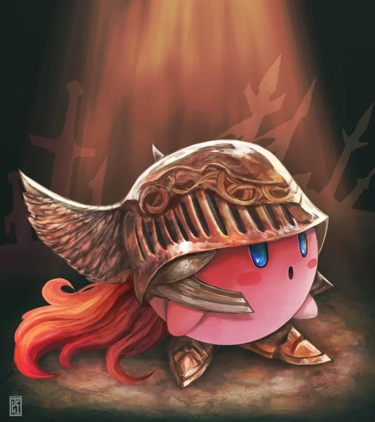

Sobre el Autor y la Saga
Saludos. Soy solo un No-Muerto más, un viajero que ha quedado fascinado por los ciclos de Fuego y Oscuridad. Este blog nació de la necesidad de documentar los fragmentos de historia esparcidos por un mundo en decadencia, un mundo que nos cuenta su relato no con palabras directas, sino a través de sus ruinas, sus enemigos y la descripción de cada objeto.
Dark Souls, desarrollado por FromSoftware y dirigido por Hidetaka Miyazaki, es más que un juego de rol de acción. Es una experiencia que nos enseña sobre la perseverancia, la belleza en la desolación y la importancia de mantener una llama de esperanza, por pequeña que sea, en la más profunda oscuridad.
Este espacio no busca ser una guía, sino un grimorio de reflexiones. Un lugar para recordar por qué, una y otra vez, elegimos encender la hoguera y continuar nuestro arduo viaje.